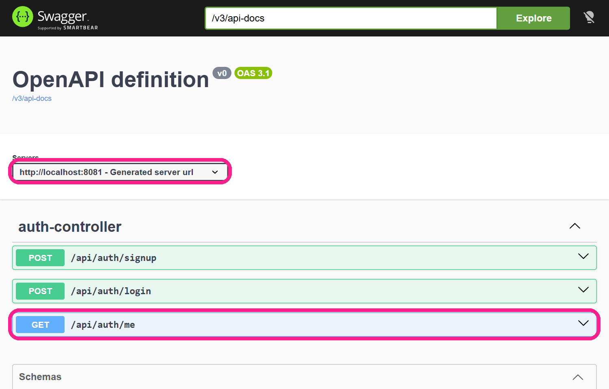

4장. user-service - 회원가입 · 로그인 · 토큰 발급
학습 목표
- 회원 서비스가 자기 DB(userdb) 만 쓰도록 설정한다.
- 로그인에 성공하면 닉네임까지 담은 JWT 를 발급한다.
- 로그인 검사(Spring Security)를 서비스에서 빼고, 게이트웨이가 준 X-User-Id 헤더로 "내 정보" 를 돌려준다.
4-1. 모놀리식 판과 무엇이 다른가
| 모놀리식 (React 심화 과정) | user-service | |
|---|---|---|
| 맡은 일 | 회원 + 게시글 + 보안 | 회원만 |
| DB | authboard |
userdb |
| 비밀번호 해시 | Spring Security 전체 | spring-security-crypto (BCrypt 도구만) |
| 토큰 | 발급 + 검사 | 발급만 (검사는 게이트웨이) |
| 토큰 내용 | sub(번호) |
sub(번호) + nickname |
| "지금 요청한 사람" | @AuthenticationPrincipal LoginUser |
@RequestHeader("X-User-Id") |
| 파일 | SecurityConfig, JwtAuthenticationFilter, LoginUser ... | 없음 (그만큼 단순해졌다) |
API 주소와 JSON 은 모놀리식 판과 똑같다.
| 주소 | 방식 | 로그인 | 하는 일 | 성공 |
|---|---|---|---|---|
/api/auth/signup |
POST | - | 회원가입 | 201 |
/api/auth/login |
POST | - | 로그인 → 토큰 발급 | 200 |
/api/auth/me |
GET | 필요 | 토큰 주인 정보 | 200 |
user-service/src/main/java/com/example/user
├─ UserServiceApplication.java 시작점 (8081)
├─ User.java, UserRepository.java users 테이블
├─ AuthController.java API 3개
├─ AuthService.java 가입 · 로그인 · 내 정보 규칙
├─ JwtProvider.java 토큰 만들기
├─ PasswordConfig.java BCrypt 도구 등록
├─ SignupRequest, LoginRequest, UserResponse, TokenResponse 요청·응답 JSON (React 심화 과정과 같음)
└─ common/ApiException, GlobalExceptionHandler 오류 → {"detail": ...}
4-2. 설정 - userdb 에만 접속
# application.yml - 회원 서비스(user-service) 설정
# ${이름:기본값} → 환경 변수 "이름" 이 있으면 그 값, 없으면 기본값
server:
port: 8081 # 게이트웨이(8080)가 /api/auth/** 요청을 이 포트로 보내 준다
spring:
servlet:
encoding:
force-response: true # 응답에 "charset=UTF-8" 을 붙인다 → Windows PowerShell 5.1 에서도 한글이 깨지지 않는다
application:
name: user-service
datasource:
# [MSA 개념] 회원 서비스는 userdb 에만 접속한다. postdb(게시글)는 모른다.
url: ${DB_URL:jdbc:postgresql://localhost:5435/userdb}
username: postgres
password: postgres
jpa:
hibernate:
ddl-auto: update # User Entity 를 보고 users 테이블을 만든다
show-sql: true
open-in-view: false
# JWT(로그인 토큰) 설정 - JwtProvider 가 읽어 간다
jwt:
# 토큰 서명 열쇠. api-gateway 의 jwt.secret 과 "반드시 같은 값" 이어야 한다.
# user-service 가 이 열쇠로 서명 → api-gateway 가 같은 열쇠로 진짜인지 확인
# 실제 서비스에서는 환경 변수 JWT_SECRET 으로 넣고 GitHub 에 올리지 않는다. (32글자 이상)
secret: ${JWT_SECRET:dev-only-secret-change-me-0123456789abcdef}
expiration-minutes: ${ACCESS_TOKEN_MINUTES:60} # 토큰 유효 시간(분)
springdoc:
swagger-ui:
path: /docs # http://localhost:8081/docs
[MSA 개념] 접속 주소가 곧 경계선이다. user-service 의
datasource.url에는userdb만 적혀 있다. 이 서비스는postdb의 존재조차 모른다. 다른 서비스의 데이터가 필요하면 DB 가 아니라 API 로 물어봐야 한다.
spring.servlet.encoding.force-response 는 응답에 charset=UTF-8 을 붙여 PowerShell 에서도 한글이 깨지지 않게 하는 설정이다(7장 참고). MSA 와는 관계없다.
jwt.secret 은 게이트웨이와 반드시 같은 값이어야 한다. user-service 가 이 열쇠로 서명한 토큰을, 게이트웨이가 같은 열쇠로 검사하기 때문이다. (6장)
4-3. 라이브러리 - Security 전체 대신 crypto 만
// build.gradle (user-service) - 회원 서비스에 필요한 라이브러리
//
// webmvc : REST API 만들기 (@RestController)
// data-jpa + postgresql : userdb 의 users 테이블 쓰기
// validation : 가입 입력 검사 (@NotBlank, @Pattern ...)
// spring-security-crypto : BCrypt 비밀번호 해시 "도구만" 쓴다.
// Spring Security 전체(로그인 필터, 주소 규칙)는 쓰지 않는다.
// → 로그인 검사는 api-gateway 가 맡기 때문이다 (MSA 개념: 인증은 정문에서 한 번)
// jjwt : 로그인에 성공하면 JWT 토큰을 "만든다" (검사는 게이트웨이가 한다)
// springdoc : http://localhost:8081/docs 에서 API 를 바로 시험해 보기
dependencies {
implementation 'org.springframework.boot:spring-boot-starter-webmvc'
implementation 'org.springframework.boot:spring-boot-starter-data-jpa'
implementation 'org.springframework.boot:spring-boot-starter-validation'
implementation 'org.springframework.security:spring-security-crypto'
implementation 'org.springdoc:springdoc-openapi-starter-webmvc-ui:3.2.0'
implementation 'io.jsonwebtoken:jjwt-api:0.13.0'
runtimeOnly 'io.jsonwebtoken:jjwt-impl:0.13.0'
runtimeOnly 'io.jsonwebtoken:jjwt-jackson:0.13.0'
runtimeOnly 'org.postgresql:postgresql'
}
React 심화 과정에서는 spring-boot-starter-security 를 넣었다. 그러면 Spring Security 가 모든 요청을 막고 로그인 화면·필터·주소 규칙을 함께 켠다. 이번에는 로그인 검사를 게이트웨이가 하므로, BCrypt 해시 도구가 든 spring-security-crypto 만 넣는다. 도구만 쓰니 Bean 하나만 등록하면 된다.
package com.example.user;
import org.springframework.context.annotation.Bean;
import org.springframework.context.annotation.Configuration;
import org.springframework.security.crypto.bcrypt.BCryptPasswordEncoder;
import org.springframework.security.crypto.password.PasswordEncoder;
/**
* PasswordConfig - 비밀번호 해시 도구(BCrypt)를 Bean 으로 등록
*
* encode("password123") → "$2a$10$Q5..." (매번 다른 값. 소금(salt)을 섞기 때문)
* matches("password123", 해시) → true / false
*
* 모놀리식 판에서는 SecurityConfig 안에 있었다. 이 서비스는 Spring Security 전체를 쓰지 않고
* 해시 도구(spring-security-crypto)만 쓰므로, 이 작은 설정 파일 하나면 된다.
*/
@Configuration
public class PasswordConfig {
@Bean
public PasswordEncoder passwordEncoder() {
return new BCryptPasswordEncoder();
}
}
4-4. User Entity - 바뀐 것 없음
package com.example.user;
import jakarta.persistence.Column;
import jakarta.persistence.Entity;
import jakarta.persistence.GeneratedValue;
import jakarta.persistence.GenerationType;
import jakarta.persistence.Id;
import jakarta.persistence.PrePersist;
import jakarta.persistence.Table;
import java.time.LocalDateTime;
import java.time.temporal.ChronoUnit;
/**
* User - 회원 Entity (userdb 의 users 테이블)
*
* id bigint 자동 번호
* username varchar(30) 로그인 아이디 (UNIQUE: 중복 불가)
* password_hash varchar(255) 비밀번호가 아니라 "해시" 를 저장한다 (BCrypt)
* nickname varchar(30) 화면에 보일 이름
* created_at timestamp 가입 시각
*
* 모놀리식(한 서버) 판과 달라진 점이 없다. 회원 정보는 회원 서비스가 혼자 책임진다.
* 테이블 이름을 user 가 아니라 users 로 정한 이유: PostgreSQL 에서 user 는 예약어라서.
*/
@Entity
@Table(name = "users")
public class User {
@Id
@GeneratedValue(strategy = GenerationType.IDENTITY)
private Long id;
@Column(nullable = false, unique = true, length = 30)
private String username;
@Column(nullable = false)
private String passwordHash;
@Column(nullable = false, length = 30)
private String nickname;
@Column(nullable = false, updatable = false)
private LocalDateTime createdAt;
protected User() { // JPA 가 DB 에서 읽어 올 때 쓰는 빈 생성자
}
public User(String username, String passwordHash, String nickname) {
this.username = username;
this.passwordHash = passwordHash;
this.nickname = nickname;
}
@PrePersist // INSERT 직전에 자동 실행
void onCreate() {
createdAt = LocalDateTime.now().truncatedTo(ChronoUnit.MICROS); // PostgreSQL 저장 단위(마이크로초)에 맞춘다
}
public Long getId() { return id; }
public String getUsername() { return username; }
public String getPasswordHash() { return passwordHash; }
public String getNickname() { return nickname; }
public LocalDateTime getCreatedAt() { return createdAt; }
}
회원 테이블은 React 심화 과정과 같다. 다른 점은 어느 DB 에 만들어지는가(userdb) 하나뿐이다.
4-5. JwtProvider - 토큰에 닉네임 싣기
package com.example.user;
import io.jsonwebtoken.Jwts;
import io.jsonwebtoken.security.Keys;
import java.nio.charset.StandardCharsets;
import java.time.Duration;
import java.time.Instant;
import java.util.Date;
import javax.crypto.SecretKey;
import org.springframework.beans.factory.annotation.Value;
import org.springframework.stereotype.Component;
/**
* JwtProvider - JWT(로그인 토큰) "만들기" 전용
*
* [MSA 개념] 토큰은 회원 서비스가 만들고, 검사는 게이트웨이가 한다
* - 회원 서비스 : 로그인에 성공하면 비밀 열쇠로 서명한 토큰을 발급한다 (이 파일)
* - 게이트웨이 : 요청마다 같은 비밀 열쇠로 토큰이 진짜인지 확인한다 (api-gateway 의 JwtChecker)
* 두 서비스가 같은 열쇠(jwt.secret)를 나눠 가지므로, 게이트웨이는 회원 서비스나 userdb 에
* 물어보지 않고도 "누가 보낸 요청인지" 알 수 있다.
*
* 토큰 안에 넣는 것 (토큰 내용은 누구나 읽을 수 있으므로 비밀번호는 절대 넣지 않는다)
* sub : 사용자 번호 (예: "3")
* nickname : 닉네임 (예: "민수") ← 모놀리식 판에는 없던 것.
* 게시글 서비스가 글쓴이 이름을 알아야 하는데 userdb 를 볼 수 없으니 토큰에 실어 보낸다.
* iat, exp : 발급 시각, 만료 시각
*/
@Component
public class JwtProvider {
private final SecretKey key;
private final Duration expiration;
public JwtProvider(@Value("${jwt.secret}") String secret,
@Value("${jwt.expiration-minutes}") long expirationMinutes) {
// HS256 은 32바이트(256비트) 이상의 열쇠가 필요하다. 짧으면 서버가 켜질 때 오류가 난다
this.key = Keys.hmacShaKeyFor(secret.getBytes(StandardCharsets.UTF_8));
this.expiration = Duration.ofMinutes(expirationMinutes);
}
/** 회원 정보를 담은 토큰을 만든다 */
public String createToken(User user) {
Instant now = Instant.now();
return Jwts.builder()
.subject(String.valueOf(user.getId())) // sub: 토큰 주인 번호 (문자열로 넣는 것이 규칙)
.claim("nickname", user.getNickname()) // nickname: 글쓴이 이름으로 쓰인다
.issuedAt(Date.from(now)) // iat: 발급 시각
.expiration(Date.from(now.plus(expiration))) // exp: 만료 시각
.signWith(key) // 서명 (열쇠 길이를 보고 HS256 을 고른다)
.compact(); // "헤더.내용.서명" 글자로
}
}
React 심화 과정 토큰에는 사용자 번호(sub)만 있었다. 이번에는 .claim("nickname", ...) 으로 닉네임을 더 넣는다. 로그인한 minsu(민수)의 토큰 가운데 부분(내용)을 풀어 보면 이렇다.
{ "sub": "1", "nickname": "민수", "iat": 1795493407, "exp": 1795497007 }
[MSA 개념] 왜 닉네임을 토큰에 넣을까?
post-service 는 글쓴이 닉네임을
posts.writer에 저장해야 한다(5장). 그런데 post-service 는userdb를 볼 수 없다. user-service 에 "1번 회원 닉네임이 뭐예요?" 하고 API 로 물어볼 수도 있지만, 그러면 글을 쓸 때마다 서비스끼리 통신해야 하고, user-service 가 꺼지면 글도 못 쓴다. 토큰에 실어 보내면 게이트웨이가 토큰을 검사할 때 닉네임을 함께 꺼내 전달할 수 있다.대신 토큰 내용은 누구나 읽을 수 있으므로 비밀번호 같은 비밀은 절대 넣지 않는다.
4-6. AuthService - 가입 · 로그인 · 내 정보
package com.example.user;
import com.example.user.common.ApiException;
import org.springframework.http.HttpStatus;
import org.springframework.security.crypto.password.PasswordEncoder;
import org.springframework.stereotype.Service;
import org.springframework.transaction.annotation.Transactional;
/**
* AuthService - 회원가입·로그인·내 정보 규칙
*
* 가입 : 아이디 중복이면 409 → 비밀번호를 BCrypt 해시로 바꿔 저장
* 로그인 : 아이디로 회원 찾기 → 비밀번호와 해시 비교 → 맞으면 JWT 발급
* 내 정보 : 게이트웨이가 알려 준 사용자 번호로 회원을 찾아 돌려준다
*/
@Service
@Transactional(readOnly = true)
public class AuthService {
private final UserRepository userRepository;
private final PasswordEncoder passwordEncoder;
private final JwtProvider jwtProvider;
public AuthService(UserRepository userRepository, PasswordEncoder passwordEncoder, JwtProvider jwtProvider) {
this.userRepository = userRepository;
this.passwordEncoder = passwordEncoder;
this.jwtProvider = jwtProvider;
}
@Transactional
public UserResponse signup(SignupRequest request) {
if (userRepository.existsByUsername(request.username())) {
throw new ApiException(HttpStatus.CONFLICT, "이미 사용 중인 아이디입니다"); // 409
}
String hash = passwordEncoder.encode(request.password()); // 비밀번호 → 해시
User user = userRepository.save(new User(request.username(), hash, request.nickname().strip()));
return UserResponse.from(user);
}
public TokenResponse login(LoginRequest request) {
User user = userRepository.findByUsername(request.username())
// 아이디가 없을 때와 비밀번호가 틀릴 때 같은 메시지를 준다
// → "이 아이디는 가입되어 있다" 는 정보를 공격자에게 주지 않기 위해
.filter(u -> passwordEncoder.matches(request.password(), u.getPasswordHash()))
.orElseThrow(() -> new ApiException(HttpStatus.UNAUTHORIZED, "아이디 또는 비밀번호가 올바르지 않습니다"));
String token = jwtProvider.createToken(user); // 번호 + 닉네임을 담은 토큰
return TokenResponse.bearer(token, UserResponse.from(user));
}
public UserResponse me(Long userId) {
return userRepository.findById(userId)
.map(UserResponse::from)
// 토큰은 진짜인데 회원이 없다 = 토큰 발급 뒤에 DB 를 지웠다 → 다시 로그인하게 한다
.orElseThrow(() -> new ApiException(HttpStatus.UNAUTHORIZED, "로그인이 만료되었습니다. 다시 로그인하세요"));
}
}
React 심화 과정과 거의 같다. 달라진 곳은 jwtProvider.createToken(user) 로 User 전체를 넘겨 닉네임까지 담는 것뿐이다.
4-7. AuthController - X-User-Id 헤더로 "나" 를 안다
package com.example.user;
import jakarta.validation.Valid;
import org.springframework.http.HttpStatus;
import org.springframework.web.bind.annotation.GetMapping;
import org.springframework.web.bind.annotation.PostMapping;
import org.springframework.web.bind.annotation.RequestBody;
import org.springframework.web.bind.annotation.RequestHeader;
import org.springframework.web.bind.annotation.RequestMapping;
import org.springframework.web.bind.annotation.ResponseStatus;
import org.springframework.web.bind.annotation.RestController;
/**
* AuthController - 회원가입·로그인·내 정보 API (회원 서비스, 포트 8081)
*
* 주소 방식 로그인 하는 일 성공
* /api/auth/signup POST - 회원가입 201
* /api/auth/login POST - 로그인 → 토큰 발급 200
* /api/auth/me GET 필요 토큰 주인의 정보 200
*
* [MSA 개념] "로그인 필요" 검사는 이 서비스가 하지 않는다
* React 는 항상 게이트웨이(8080)로 요청한다. 게이트웨이가 토큰을 검사하고,
* 통과하면 요청 헤더에 "X-User-Id: 3" 을 붙여서 이 서비스로 넘겨 준다.
* 그래서 이 서비스는 토큰을 볼 필요 없이 @RequestHeader("X-User-Id") 로 번호만 꺼내 쓰면 된다.
* (X-User-Id 헤더 없이 8081 로 직접 부르면 GlobalExceptionHandler 가 401 로 응답한다)
*/
@RestController
@RequestMapping("/api/auth")
public class AuthController {
private final AuthService authService;
public AuthController(AuthService authService) {
this.authService = authService;
}
@PostMapping("/signup")
@ResponseStatus(HttpStatus.CREATED)
public UserResponse signup(@Valid @RequestBody SignupRequest request) {
return authService.signup(request);
}
@PostMapping("/login")
public TokenResponse login(@Valid @RequestBody LoginRequest request) {
return authService.login(request);
}
@GetMapping("/me")
public UserResponse me(@RequestHeader("X-User-Id") Long userId) { // 게이트웨이가 붙여 준 사용자 번호
return authService.me(userId);
}
}
/me 를 보자. React 심화 과정에서는 Spring Security 가 토큰을 검사해 @AuthenticationPrincipal LoginUser 로 넣어 줬다. 이제는 게이트웨이가 토큰을 검사하고 X-User-Id: 1 헤더를 붙여 보낸다. 서비스는 @RequestHeader("X-User-Id") Long userId 로 그 값만 받으면 된다.
헤더가 없을 때(게이트웨이를 거치지 않았을 때)는 GlobalExceptionHandler 에 더한 아래 코드가 401 로 응답한다.
@ExceptionHandler(MissingRequestHeaderException.class)
public ResponseEntity<Map<String, String>> handleMissingHeader(MissingRequestHeaderException e) {
return detail(HttpStatus.UNAUTHORIZED, "로그인이 필요합니다");
}
4-8. 켜서 시험하기
2장의 DB 가 켜져 있는지 확인하고, IntelliJ 에서 UserServiceApplication 을 ▶ 로 실행한다. 콘솔 끝에 아래 줄이 보이면 성공이다.
Started UserServiceApplication in 12.965 seconds
① /docs 로 시험 - 브라우저에서 http://localhost:8081/docs 를 연다. 회원 서비스의 API 3개만 보인다. 게시글 API 는 이 서비스에 없기 때문이다.

POST /api/auth/signup → Try it out 에 아래 JSON 을 넣고 Execute → 201 이 나오면 가입 성공이다.
{ "username": "minsu", "password": "password123", "nickname": "민수" }
② userdb 에 저장됐는지 확인
[PS]
docker exec mas-db psql -U postgres -d userdb -c "select id, username, nickname from users" # userdb 의 회원 목록
docker exec mas-db psql -U postgres -d postdb -c "\dt" # postdb 의 테이블 목록 (\dt) - users 가 없어야 정상
id | username | nickname
----+----------+----------
1 | minsu | 민수
Did not find any relations. ← postdb 에는 아직 아무 테이블도 없다
users 는 userdb 에만 생겼다. post-service 를 켜지 않았으니 postdb 는 비어 있다. (0장 끝에서 전체를 먼저 켜 봤다면 postdb 에 posts 가 이미 있다. 그래도 users 는 postdb 에 없다는 점은 같다)
이 minsu 계정은 7장에서도 그대로 쓴다. 7장에서 React 로 회원가입할 때 minsu 가 이미 있다고 나오면(409
이미 사용 중인 아이디입니다) 가입하지 말고 바로 로그인하면 된다.
③ /me 를 직접 불러 보기 - /docs 에서 GET /api/auth/me 를 열면 X-User-Id 입력 칸이 보인다. 1 을 넣고 Execute 하면 민수의 정보가 나온다. (이 칸은 필수라서 비워 두면 Swagger 화면이 요청을 보내지 않고 빨간 테두리만 보여 준다)
헤더 없이 보내면 어떻게 될까? PowerShell 로 직접 보내 보자. 먼저 오류 응답을 보기 좋게 찍어 주는 작은 함수를 만든다. (Windows PowerShell 5.1 은 오류 응답의 내용을 보여 주지 않을 때가 있어서 이 함수가 필요하다. 7장에서도 쓴다)
[PS]
# 오류가 나면 "상태코드 {"detail": "..."}" 모양으로 보여 주는 함수
function Show-Error($err) { # $err: catch 에서 받은 오류 ($_)
# PowerShell 7 은 응답 본문을 ErrorDetails 에 넣어 준다
if ($err.ErrorDetails.Message) { $body = $err.ErrorDetails.Message }
else {
# Windows PowerShell 5.1 은 응답 스트림을 직접 UTF-8 로 읽어야 한글이 깨지지 않는다
$reader = New-Object System.IO.StreamReader($err.Exception.Response.GetResponseStream(), [System.Text.Encoding]::UTF8)
$body = $reader.ReadToEnd()
}
"$([int]$err.Exception.Response.StatusCode) $body" # 예: 401 {"detail":"로그인이 필요합니다"}
}
# ① 헤더 없이 내 정보 요청 → 401 이 나와야 한다 (try 로 감싸서 오류를 Show-Error 로 보기 좋게 찍는다)
try { Invoke-RestMethod http://localhost:8081/api/auth/me } catch { Show-Error $_ }
# ② 게이트웨이인 척 X-User-Id 헤더를 직접 붙여 요청 → 1번 회원 정보가 나온다 (8081 에 바로 보냈기 때문)
Invoke-RestMethod http://localhost:8081/api/auth/me -Headers @{ "X-User-Id" = "1" }
401 {"detail":"로그인이 필요합니다"}
id username nickname
-- -------- --------
1 minsu 민수
[MSA 개념] 서비스 포트는 바깥에 열지 않는다.
방금
X-User-Id에 아무 번호나 넣으니 그 사람 정보가 나왔다. 서비스는 "이 헤더는 게이트웨이가 검사하고 붙였다" 고 믿기 때문이다. 그래서 실제 운영에서는 게이트웨이(8080)만 인터넷에 열고, 서비스 포트(8081, 8082)는 내부망에서만 보이게 막는다. 이 교안은 공부를 위해/docs로 직접 불러 볼 수 있게 열어 둔 것이다.
정리
- user-service 는 회원 일만 하고 userdb 만 쓴다.
- BCrypt 는
spring-security-crypto도구만 쓰고, 로그인 검사는 게이트웨이에 맡긴다. - 토큰에 nickname 을 더 실어서, 다른 서비스가 userdb 없이도 닉네임을 알 수 있게 한다.
- "지금 요청한 사람" 은 게이트웨이가 붙인 X-User-Id 헤더로 안다.
확인 문제
- user-service 가
spring-boot-starter-security대신spring-security-crypto만 쓰는 이유는? - 토큰에 비밀번호 해시를 넣으면 안 되는 이유는?
GET /api/auth/me를 8081 로 직접 부르면서X-User-Id헤더를 빼면 어떤 응답이 오는가? 어느 코드가 그 응답을 만드는가?